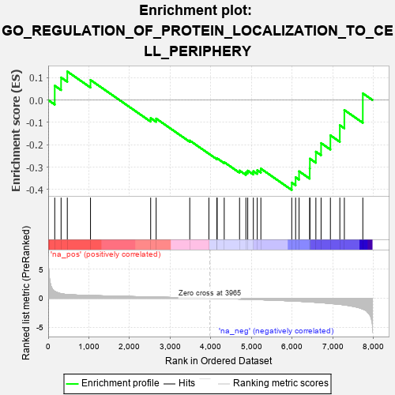
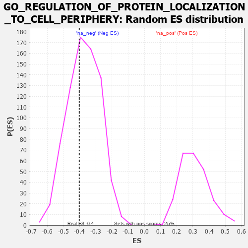

| | | Dataset | 7d |
| Phenotype | NoPhenotypeAvailable |
| Upregulated in class | na_neg |
| GeneSet | GO_REGULATION_OF_PROTEIN_LOCALIZATION_TO_CELL_PERIPHERY |
| Enrichment Score (ES) | -0.40205708 |
| Normalized Enrichment Score (NES) | -1.0761757 |
| Nominal p-value | 0.38696808 |
| FDR q-value | 0.78206146 |
| FWER p-Value | 1.0 |
Table: GSEA Results Summary

Fig 1: Enrichment plot: GO_REGULATION_OF_PROTEIN_LOCALIZATION_TO_CELL_PERIPHERY
Profile of the Running ES Score & Positions of GeneSet Members on the Rank Ordered List
| PROBE | GENE SYMBOL | GENE_TITLE | RANK IN GENE LIST | RANK METRIC SCORE | RUNNING ES | CORE ENRICHMENT | | 1 | CSRP3 | | | 161 | 1.186 | 0.0639 | No |
| 2 | CNST | | | 317 | 0.792 | 0.1006 | No |
| 3 | LRP1 | | | 470 | 0.648 | 0.1274 | No |
| 4 | AKT1 | | | 1040 | 0.476 | 0.0895 | No |
| 5 | NUMB | | | 2519 | 0.224 | -0.0806 | No |
| 6 | VPS4A | | | 2654 | 0.205 | -0.0830 | No |
| 7 | CDK5 | | | 3480 | 0.080 | -0.1811 | No |
| 8 | GPC6 | | | 3950 | 0.002 | -0.2400 | No |
| 9 | STX7 | | | 4147 | -0.033 | -0.2624 | No |
| 10 | WNK3 | | | 4153 | -0.034 | -0.2606 | No |
| 11 | STAC | | | 4327 | -0.064 | -0.2778 | No |
| 12 | ARF6 | | | 4704 | -0.140 | -0.3152 | No |
| 13 | DLG1 | | | 4860 | -0.169 | -0.3227 | No |
| 14 | VAMP8 | | | 4905 | -0.179 | -0.3156 | No |
| 15 | PDPK1 | | | 5043 | -0.207 | -0.3181 | No |
| 16 | RER1 | | | 5139 | -0.235 | -0.3134 | No |
| 17 | GPSM2 | | | 5228 | -0.252 | -0.3066 | No |
| 18 | STAC2 | | | 5987 | -0.466 | -0.3690 | Yes |
| 19 | PLK1 | | | 6082 | -0.500 | -0.3454 | Yes |
| 20 | GOPC | | | 6167 | -0.528 | -0.3185 | Yes |
| 21 | CSK | | | 6428 | -0.630 | -0.3065 | Yes |
| 22 | ABCA2 | | | 6433 | -0.634 | -0.2621 | Yes |
| 23 | CLN3 | | | 6580 | -0.699 | -0.2308 | Yes |
| 24 | EGFR | | | 6708 | -0.765 | -0.1925 | Yes |
| 25 | GHSR | | | 6937 | -0.894 | -0.1578 | Yes |
| 26 | AR | | | 7169 | -1.046 | -0.1127 | Yes |
| 27 | CIB1 | | | 7280 | -1.152 | -0.0448 | Yes |
| 28 | PLS1 | | | 7734 | -1.855 | 0.0298 | Yes |
Table: GSEA details [plain text format]

Fig 2: GO_REGULATION_OF_PROTEIN_LOCALIZATION_TO_CELL_PERIPHERY: Random ES distribution
Gene set null distribution of ES for GO_REGULATION_OF_PROTEIN_LOCALIZATION_TO_CELL_PERIPHERY